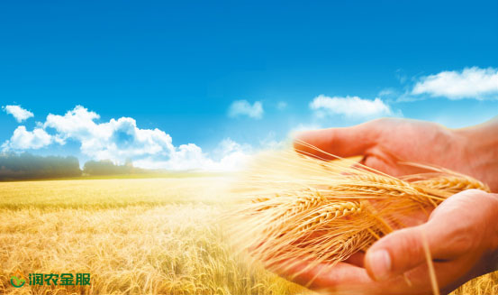
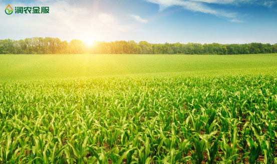

我国将开展现代农业“三区三园一体”建设
为优化农村产业结构，促进三产深度融合，今年我国将推动“三区、三园和一体”平台建设促进现代农业发展。
中央农村工作领导小组副组长、中央农办主任唐仁健6日在此间说，2017年中央一号文件在保持政策的连续性、稳定性的基础上，特别注重抓手、平台和载体建设，即“三区、三园和一体”。“三区、三园和一体”建设将优化农村产业结构，促进三产的深度融合，并集聚农村各种资金、科技、人才、项目等要素，加快推动现代农业的发展。
唐仁健在国新办举办的新闻发布会上说，任何工作、任何政策如果缺乏平台、抓手和载体的话，往往落实不下去，今年一号文件在这方面给予了格外重视和关注。主要体现就是“三区、三园、一体”。
“三区”是指粮食生产功能区、重要农产品生产保护区和特色农产品优势区，是为了保障国家的粮食安全，并使大豆、棉花、油菜籽、糖料蔗、天然橡胶等重要农产品能够保持基本自给，同时满足市场的多样化需求，提高我国农业综合效益和竞争力。“三园”是指现代农业产业园、科技园、创业园，将形成现代农业产业集群，打造现代农业的创新高地，为回乡、下乡、返乡创业的人才提供创业创新的平台。“一体”则是指田园综合体，将支持有条件的乡村建设以农业合作社为主要载体，让农民充分参与和收益，建设集循环农业、创意农业、农事体验于一体的田园综合体。
润农金服致力于三农（农业、农村、农民）金融服务，为农业产业链提供金融服务，计划在2017年底成立润农金服惠农点3000个。
润农金服惠农点为农民提供各种便利的金融服务，包括小额现金借贷、汽车金融、房屋建设装修、家用电器分期、婚丧嫁娶相关等分期服务。